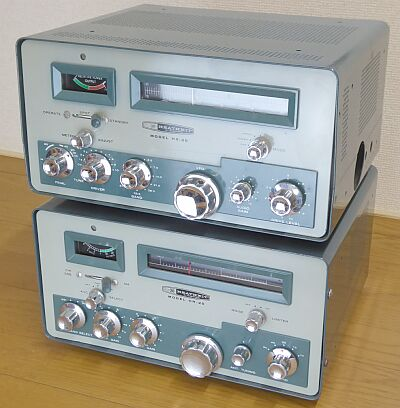 |
下：ＨＲ-２０ 受信機
上：ＨＸ-２０ 送信機とセットで
このように、車中で縦にセットできるようケース上側にも取付穴（２台を縫うための穴）が開いています
車載・・・ＵＳのベンチシートの車ならこそ、でしょう
ＨＸ-２０の右横に空いている穴は、マイクコネクタが用意されている場所です
送受信機とも同じデザインとか、左右対称のデザインとか、ＵＳはお好きです
本シリーズも、どちらがどちらか一見しただけではわかりません！ |
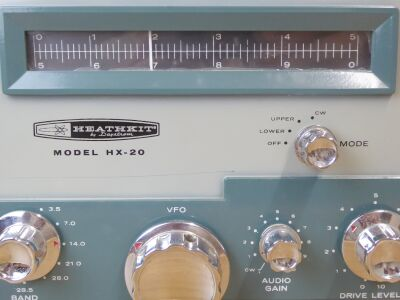 |
こちらは、モノ・ダイヤルです
０～５００、あるいは５００～１０００KHｚを表示します
ダイヤルノブ1回展当たり、おおよそ２６～７ＫＨｚ・・・おおよそ１９回転で５００ＫＨｚをカバーします
発振周波数は、５．０００～５．５００ＭＨｚです |
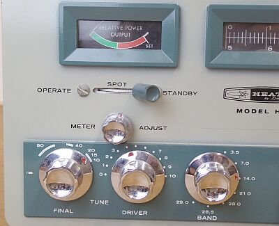 |
ファイナル・チューンについて
ロード側は、バンドSWにより固定のCを切り替えるようになっています
従いまして、ファイナル調整はプレート側ＶＣのみとなります
メーターは、ＲＦ出力表示のみです
最大パワーが得られるよう、ＤＲＩＶＥＲとＦＩＮＡＬつまみで調整しなさい・・・です
余談ですが、ファイナル管のアイドリング電流値を決めるバイアス調整ＶＲもありません（－電圧も定電圧化されています） |
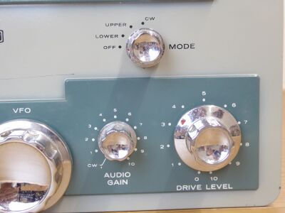 |
ＣＷは、モード切替に加え，ＡUDIO-ＧＡＩＮツマミ（マイクゲインボリューム）をＯＦＦ（ＣＷの位置）にする必要があります
このＳＷで、キャリア信号をフィルタをスルーした後のミキサーに直接結合させるようになっています
ＤＲＩＶＥ-ＬＥＶＥＬツマミは、ＣＷ時にＡＬＣラインに－（マイナス）電圧をかけることでＩＦゲインを変化させて、パワーを制御するようになっています
ＳＳＢ時には働きません |
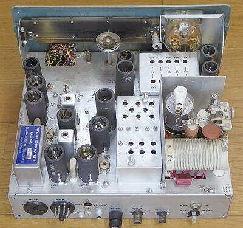 |
シャーシ上面です
ファイナル部にカバーはありません
クリスタル・フィルタが大きい！
４９９０ＫＨｚのものです
ダイヤル・カーソルは、シャーシ下から回転する軸を受けて横方向に糸掛けで駆動、です |
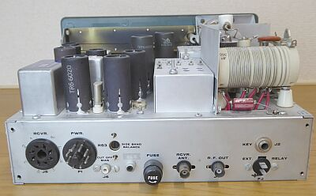 |
リアパネル側
２つのＵＳ８Ｐソケットは電源供給用
外部電源装置から、右側のコネクタに給電
左コネクタからは、受信機ＨＲ-２０に給電します |
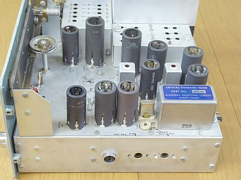 |
シャーシ上面
別角度から
手前は、ジェネレータ部です
まず、４９９０ＫＨｚ ＵＳＢを作り、ＵＳＢ／ＬＳＢに切り替えるためにコンバートして９ＭＨｚのＩＦとします
このためのサイドバンドオシレータ周波数は、
ＵＳＢ：４０１０ＫＨｚ
ＬＳＢ：１３９９０ＫＨｚ
です |
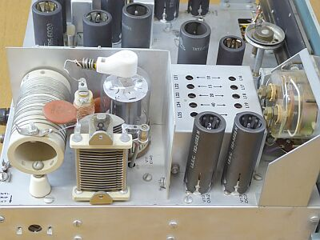 |
シャーシ上面
別角度から
こちらはＲＦ部、ファイナルは、６１４６シングルです
パネル・デザインが先行でしょう、プレートＶＣは、ご覧のように縦に取り付けられています
ロード側は固定Ｃで、ＶＣの採用はありません |
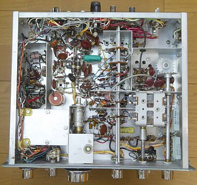 |
シャーシ下面の様子
左下のシールドケースの中はＶＦＯです
バンドＳＷを挟んで、右がドライブ、ファイナル部です |
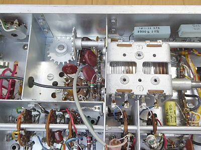 |
２連ＶＣは、ドライブ同調用
ギアで９０度回転方向を変えているのが、プレート同調ＶＣです
最初、プレート同調つまみを回した時のクリック感がなんとも異様だったのですが、構造を見て納得しました
ギアの咬むタイミングでのクリック感触、でした |
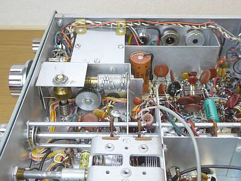 |
ＶＦＯメカ部
ウォームギアで駆動する丸いギアが、ＶＦＯのＶＣに直結
その左、縦方向に回わる軸は、ダイヤル・カーソル駆動用の軸です |
|
今まで、ＶＦＯ信号で可変中間周波数域（ＩＦ）を作って、それからバンドに合わせて周波数変換するのが当たり前に（いわゆるコリンズ・タイプです）思っていたのですが、本機（ＨＸ-１０も）、この順番が逆で、最後にＶＦＯ信号を入れて、必要なバンドの信号を作るようになっています
想像するに、ＩＦ周波数が固定のほうが回路構成も調整も（ドライブ調整と、ＩＦ調整のトラッキングもなく）「楽」・・・と考えたのでしょう
一度９ＭＨｚの固定ＩＦにした後、目的周波数から５．５ＭＨｚを足した周波数にコンバートし、最後にＶＦＯ周波数を差し引く、このような周波数構成がとられています（３．５ＭＨｚ帯はコンバートなしで、いきなりＩＦの９ＭＨｚ－５．５ＭＨｚです）
ＳＳＢ黎明期の製品で、基本に忠実もあれば工夫も多く、なかなか楽しそうな送信機です
つい、いろいろ触ってみたくなりそうです
プリント基板を採用しないキットとしては、このあたりが限界そうです |